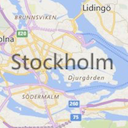
Bing Maps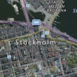
Bing Maps Bird's Eye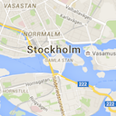
Google Maps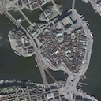
Google Maps Satellite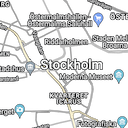
Google Maps Hybrid (overlay)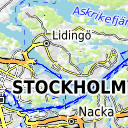
OpenTopoMap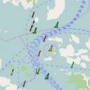
OpenSeaMap (overlay)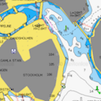
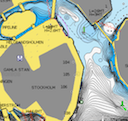
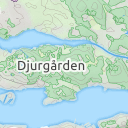
Thunderforest landscape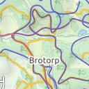
Thunderforest outdoors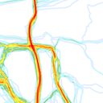
Trailforks heatmap (overlay)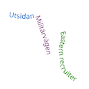
Trailforks labels (overlay)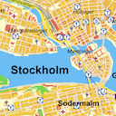
Eniro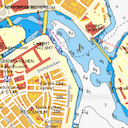
Eniro +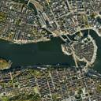
Eniro Flygfoto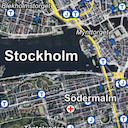
Eniro Hybrid (overlay)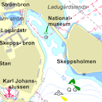
Eniro Sjökort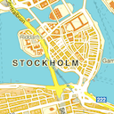
Hitta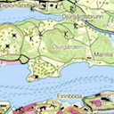
Hitta Frilufts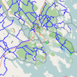
Skoterleder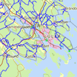
Skoterleder (overlay)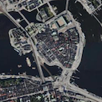
Hitta Satellit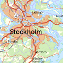
Lantmäteriets Topografisk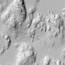
Lantmäteriets Min karta Bergodal terrängskuggning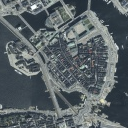
Lantmäteriets Flygbild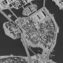
Lantmäteriets Min karta Flygbild ca 1970-1990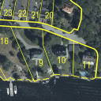
Lantmäteriets Min karta Fastighetsgränser (dark overlay)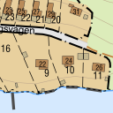
Lantmäteriets Min karta Fastighetsgränser (light overlay)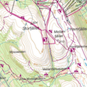
Lantmäteriets Fjällkarta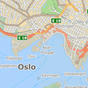
FINN Kart Norge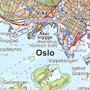
Kartverket Topo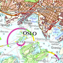
Kartverket Topo (raster)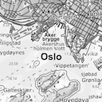
Kartverket Topo (gråtone)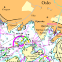
Kartverket Sjøkartraster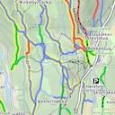
MTBmap.no - Norwegian Mountainbike Map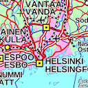
Lantmäteriverket Terrängkarta / Maanmittauslaitos Maastokartta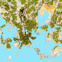
MapAnt Finland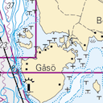
Sailmate Traficom Finska sjökort / Suomalaiset merikartat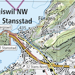
Swisstopo Landeskarte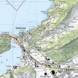
Swisstopo Landeskarte 1:25'000 (fixed)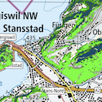
Overlay Example: "Waldmischgrad"**
** Notes on Swisstopo Maps:
— The full collection of layers is available at geo.admin.ch's WMTS portal.